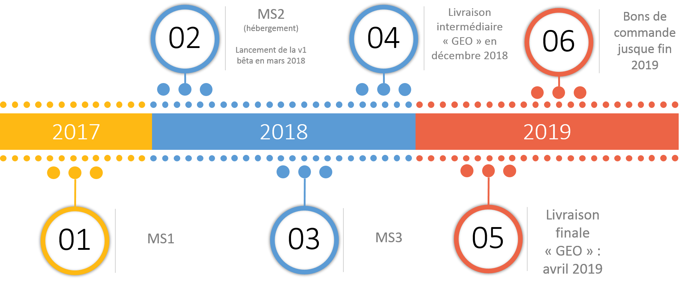

DATADAYS#2
Atelier de publication pour DATASUD

Proposé par le CRIGE Provence-Alpes-Côte d'Azur le 21 février 2019 Disponible sur le git du CRIGE
Rappel du projet
DATASUD est un projet piloté par le CRIGE Provence-Alpes-Côte d’Azur et la Région SUD Provence Alpes-Côte d’Azur, avec la participation financière de l’État et du Conseil départemental des Hautes-Alpes.
Le projet mutualise une infrastructure de données à l’échelle régionale, rendues visibles à travers un catalogue de données à l'échelon régional.
Le catalogue de données diffuse des données ouvertes, géographiques et intelligentes au service du développement des territoires et de l’innovation numérique
73 organisations diffusent déjà des données sur DATASUD. De nouvelles fonctionnalités et des données supplémentaires vont être intégrées au fil de l'eau 2019.
Partenariat CRIGE Provence-Alpes-Côte d'Azur et Région SUD
| Groupement de commande | CRIGE/Région SUD |
| Forme du Marché | Accord-cadre monoattributaire |
| Financement | 50% CRIGE, 50% Région SUD |
| Durée | Fin 2016 à fin 2019 |
Prestataire :
Sous-traitants
Le code est entièrement open-source !
Roadmap
À qui s'adresse DATASUD ?
Aux producteurs de données en région, pour référencer et diffuser leur patrimoine de données
Aux entreprises et start-up à la recherche de données
Publier des données dans des formats ouverts et réutilisables
Faire remonter les données au niveau national
Pourquoi publier sur DATASUD ?
Participer à une initiative régionale, "point d'entrée unique" de la donnée en région
Mutualiser une infrastructure --> diminuer les coûts de diffusion de l'information
Publier des données dans des formats ouverts et réutilisables
Faire remonter les données au niveau national
Que publier sur DATASUD (1)?
Des données ouvertes, évidemment, mais pas seulement
Des données au format ouvert : CSV, JSON, GEOJSON, SHP, JPEG2000, GeoTIFF
Que publier sur DATASUD (2) ?
Des données ouvertes, évidemment, mais pas seulement
Des données au format ouvert : CSV, JSON, GEOJSON, SHP, JPEG2000, GeoTIFF
Tour de table des données des participants
Publier en PRODUCTION ou en RECETTE?
Publier sur la PRODUCTION
Quand vous voulez créer une organisation, publier un jeu de données consolidées, diffuser directement au plus grand nombre
Publier sur la RECETTE
Quand vous voulez tester l'infrastructure, publier des données en brouillon, tester les services associés
La RECETTE est filtrée par IP : assurez-vous d'être connecté par câble au réseau interne CRIGEPACA
S'INSCRIRE
CREER UNE ORGANISATION
CREER UN TERRITOIRE DE COMPETENCES
PUBLIER UN JEU DE DONNEES
Au minimum 2 étapes :
- Publier une fiche de métadonnées (dataset)
- Publier la donnée (ressource)
Comment rédiger une fiche de métadonnées dans DATASUD ?
Comment publier une donnée dans DATASUD ?
CONTEMPLER SON OEUVRE
- Retourner sur votre fiche de métadonnées
- Télécharger votre jeu de données
- Prévisualiser votre jeu de données
- Télécharger votre catalogue en csv